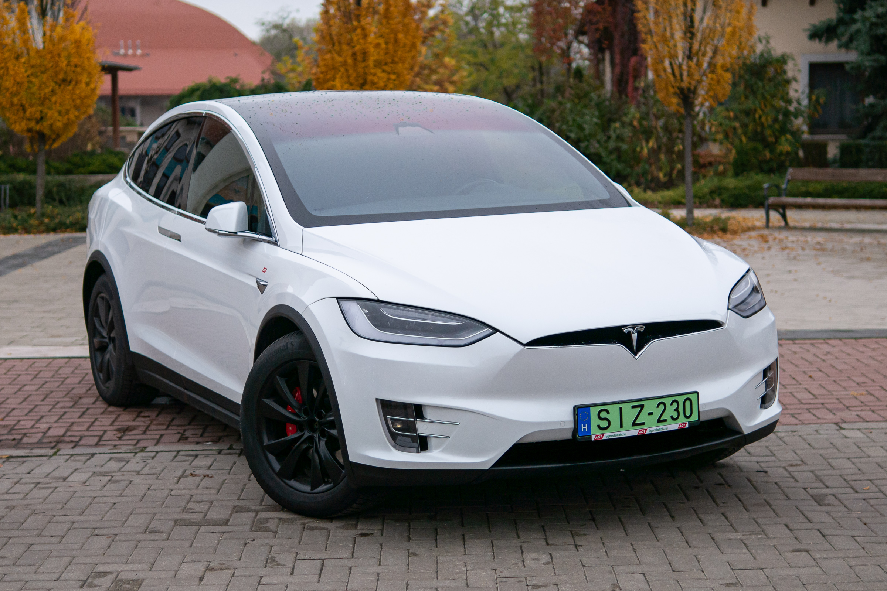

A cégről
- A Tesla (korábban Tesla Motors) elektromos meghajtású autók gyártására az amerikai Szilícium-völgyben, startup vállalatként alapított innovatív autóipari vállalkozás, amely idővel a megújuló energiára épülő infrastruktúra fejlesztésébe, így a villamosenergia-tároló és -töltő egységek, napelemek kutatásába, gyártásába is belépve, forradalmi átalakulást indított el az autóközlekedés és autógyártás és elektromos infrastruktúra területén. A kezdeti nehézségeken túllépve az önvezető és elektromos meghajtású autók fejlesztésének és gyártásának piacvezetőjévé vált. Központja a Szilícium-völgyben, Palo Altóban található.
- A vállalatot 2003-ban alapította Martin Eberhard és Marc Tarpenning San Carlosban, Kaliforniában. A következő évben csatlakozott Ian Wright, Elon Musk és J.B. Straubel. Nevét a szerb származású amerikai feltalálóról, Nikola Tesláról kapta.
- 2004-ben Elon Musk 6,5 millió dollárt fektetett magánvagyonából a cégbe.
- A 2008-ban és 2009-ben gyártott, körülbelül ezer járművet előre lefoglalták az amerikai ügyfelek, akik a márka első piacát képezték. Első európai bemutatkozása során, 2008. április 25. és 28. között Monacóban, a márka olyan hírességek érdeklődését is felkeltette, mint Albert monacói herceg, Damon Hill egykori Formula–1 bajnok, valamint Bono a U2 zenekar énekese. A Roadster európai forgalmazása – Limited Edition név alatt – 2009-ben kezdődött, egy limitált 250 darabos sorozattal.